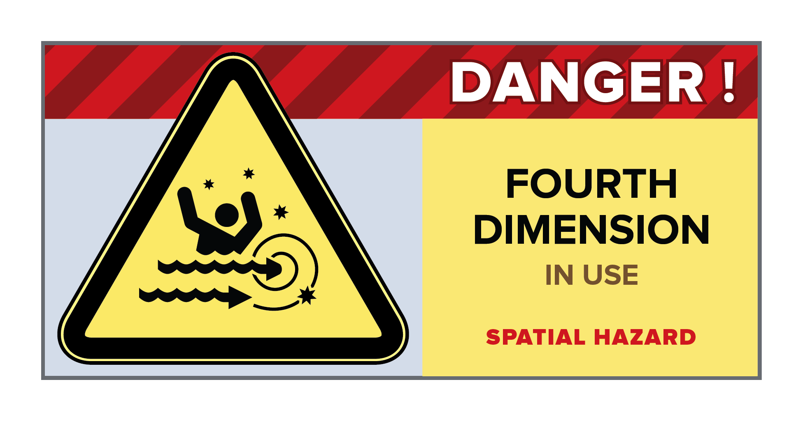
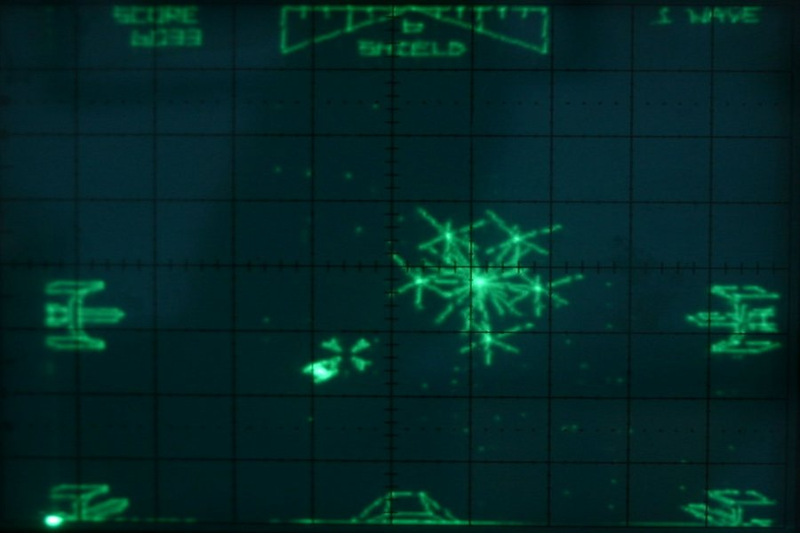
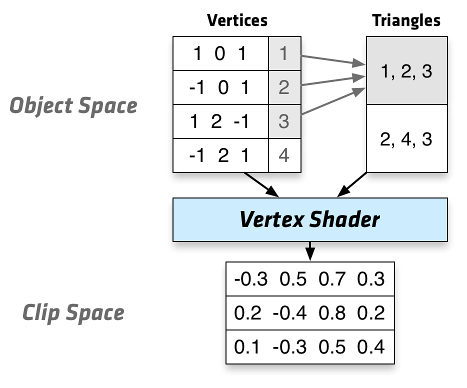
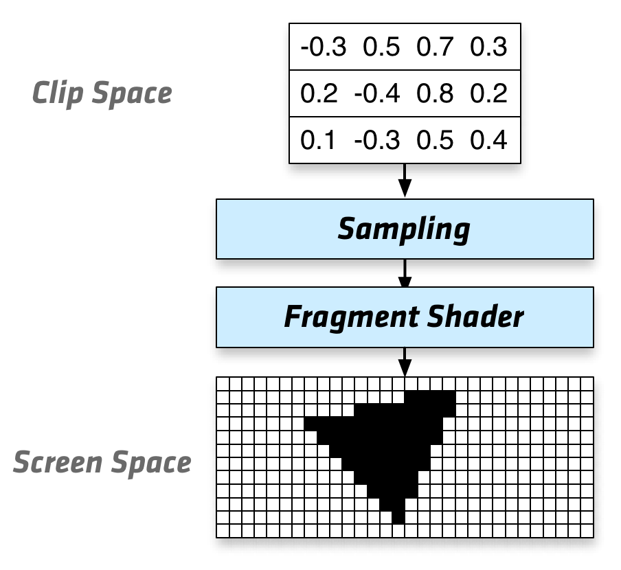
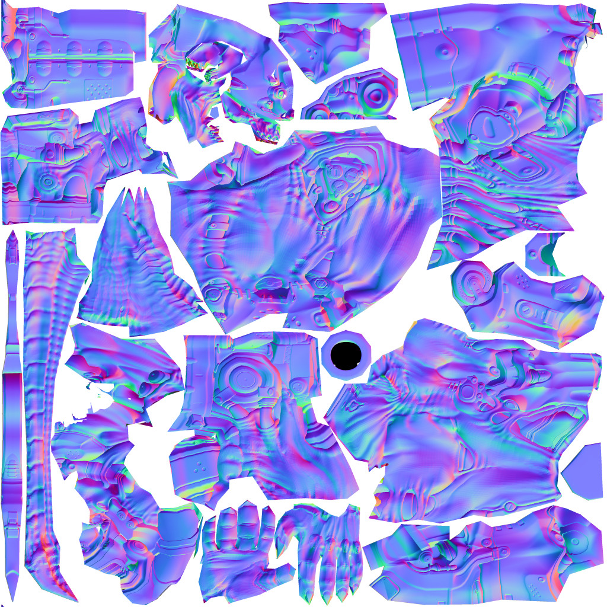
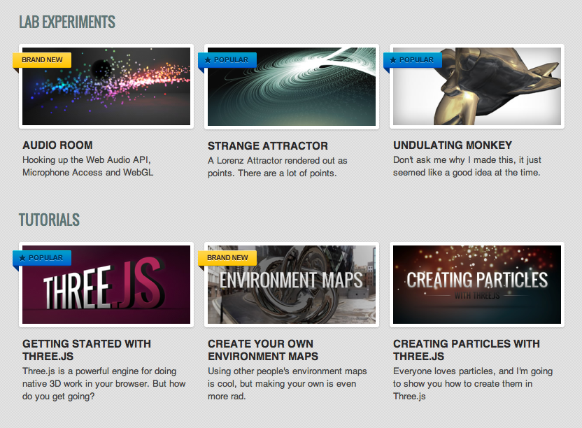
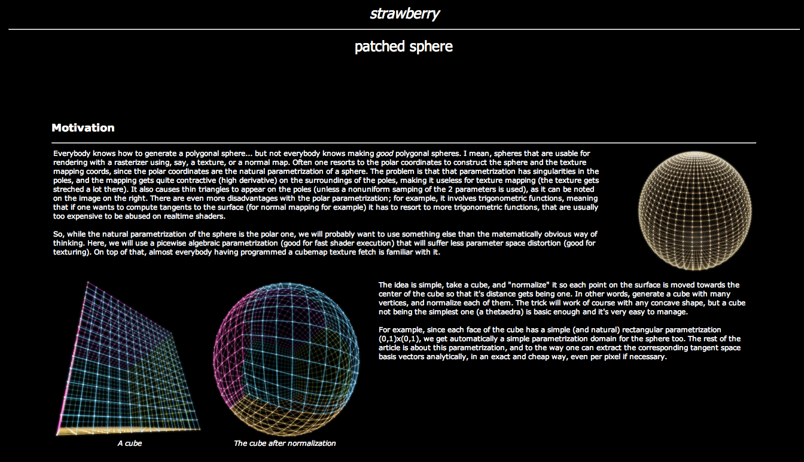
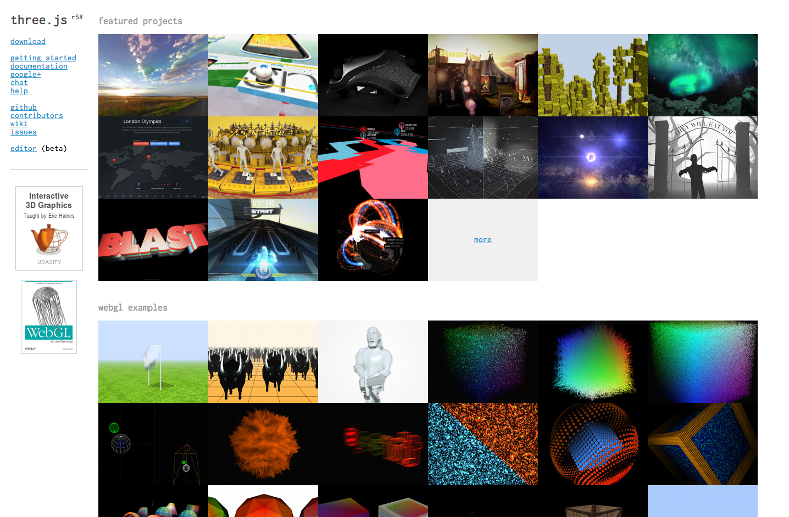
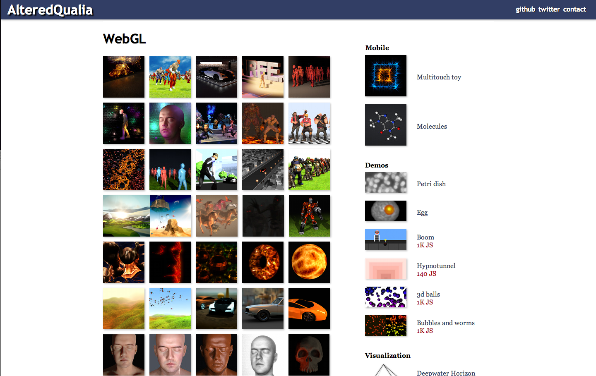
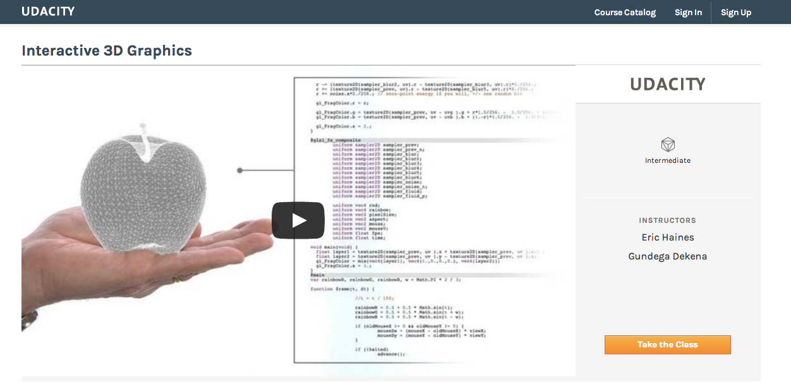

Making WebGL Dance
or How I Learnt to Stop Worrying and Love Linear Algebra
Steven Wittens

 unconed
unconed
http:// acko.net
How to DrawWhere to DrawWhat to Draw

In the BeginningThere Was Pixels

Bresenham Lines
Scanline Rendering
Snap To Pixel
"Anti-Aliasing!"
Sub-Pixel Accuracy
Samples
Vector World
Raster World
Sampling
Nearest Neighbour Filter
Bilinear Filter
Aliasing
Anisotropic Filtering ⨉ 16
Sampling Theorem – Nyquist Frequency
Jaggies = Sampled Edge
Anti-Aliasing (AA) = Blur All The Things?
Pixel Coverage – Box Filter
SuperSampling (SSAA ⨉ 16)
MultiSampling (MSAA ⨉ 16)
Sampled Box Filter + Bilinear Filter
Distance Function – Pixel-wide Gradient
AA = Filter Before Sampling
Gaussian Blur, MIP Mapping, Anisotropic Filter
Sub-Pixel AA (RGB)
-webkit-font-smoothingThe Pixel is Dead
Long Live the Pixel
Height Map – Perlin Derivative Noise
Depth – Z-Buffer / Shadow Map
Normals – Deferred Lighting
This is the Part Where You LearnLinear Algebra
Affine Transforms
Rotation
Scaling
Skewing
Parallel Lines
Vector Basis
New Basis
Disassemble and Reassemble
Matrix
$$
\begin{bmatrix}
\class{mj-blue}{0.53} & \class{mj-green}{0.42} \\
\class{mj-blue}{-0.32} & \class{mj-green}{0.77}
\end{bmatrix}
$$
Matrix-Vector Multiply
$$
\class{mj-purple}{\vec v'} = \mathbf{M} \cdot \class{mj-orangered}{\vec v}
$$
$$ \begin{bmatrix} \class{mj-purple}{x'} \\ \class{mj-purple}{y'} \end{bmatrix} = \begin{bmatrix} \class{mj-blue}{0.53} & \class{mj-green}{0.42} \\ \class{mj-blue}{-0.32} & \class{mj-green}{0.77} \end{bmatrix} \cdot \begin{bmatrix} \class{mj-orangered}{x} \\ \class{mj-orangered}{y} \end{bmatrix} $$
$$ \begin{bmatrix} \class{mj-purple}{x'} \\ \class{mj-purple}{y'} \end{bmatrix} = \begin{bmatrix} \class{mj-blue}{0.53} & \class{mj-green}{0.42} \\ \class{mj-blue}{-0.32} & \class{mj-green}{0.77} \end{bmatrix} \cdot \begin{bmatrix} \class{mj-orangered}{x} \\ \class{mj-orangered}{y} \end{bmatrix} $$
Disassemble and Reassemble
$$
\class{mj-purple}{\vec v'} = \mathbf{M} \cdot \class{mj-orangered}{\vec v}
$$
$$ \begin{bmatrix} \class{mj-purple}{x'} \\ \class{mj-purple}{y'} \end{bmatrix} = \class{mj-orangered}{x} \cdot \begin{bmatrix} \class{mj-blue}{0.53} \\ \class{mj-blue}{-0.32} \end{bmatrix} + \class{mj-orangered}{y} \cdot \begin{bmatrix} \class{mj-green}{0.42} \\ \class{mj-green}{0.77} \end{bmatrix} $$
$$ \begin{bmatrix} \class{mj-purple}{x'} \\ \class{mj-purple}{y'} \end{bmatrix} = \class{mj-orangered}{x} \cdot \begin{bmatrix} \class{mj-blue}{0.53} \\ \class{mj-blue}{-0.32} \end{bmatrix} + \class{mj-orangered}{y} \cdot \begin{bmatrix} \class{mj-green}{0.42} \\ \class{mj-green}{0.77} \end{bmatrix} $$
Matrix-Matrix Multiplication
$$
\class{mj-purple}{\vec v'} = \mathbf{M'} \cdot \class{mj-orangered}{\vec v} = \mathbf{R} \cdot \mathbf{M} \cdot \class{mj-orangered}{\vec v}
$$
$$ \begin{bmatrix} \class{mj-purple}{x'} \\ \class{mj-purple}{y'} \end{bmatrix} = \begin{bmatrix} \class{mj-blue}{-0.32} & \class{mj-green}{0.77} \\ \class{mj-blue}{-0.53} & \class{mj-green}{-0.42} \end{bmatrix} \begin{bmatrix} \class{mj-orangered}{x} \\ \class{mj-orangered}{y} \end{bmatrix} $$
$$ = \begin{bmatrix} \class{mj-blue}{0} & \class{mj-green}{1} \\ \class{mj-blue}{-1} & \class{mj-green}{0} \end{bmatrix} \begin{bmatrix} \class{mj-blue}{0.53} & \class{mj-green}{0.42} \\ \class{mj-blue}{-0.32} & \class{mj-green}{0.77} \end{bmatrix} \begin{bmatrix} \class{mj-orangered}{x} \\ \class{mj-orangered}{y} \end{bmatrix} $$
$$ \begin{bmatrix} \class{mj-purple}{x'} \\ \class{mj-purple}{y'} \end{bmatrix} = \begin{bmatrix} \class{mj-blue}{-0.32} & \class{mj-green}{0.77} \\ \class{mj-blue}{-0.53} & \class{mj-green}{-0.42} \end{bmatrix} \begin{bmatrix} \class{mj-orangered}{x} \\ \class{mj-orangered}{y} \end{bmatrix} $$
$$ = \begin{bmatrix} \class{mj-blue}{0} & \class{mj-green}{1} \\ \class{mj-blue}{-1} & \class{mj-green}{0} \end{bmatrix} \begin{bmatrix} \class{mj-blue}{0.53} & \class{mj-green}{0.42} \\ \class{mj-blue}{-0.32} & \class{mj-green}{0.77} \end{bmatrix} \begin{bmatrix} \class{mj-orangered}{x} \\ \class{mj-orangered}{y} \end{bmatrix} $$
3D
$$
\class{mj-purple}{\vec v'} = \mathbf{M} \cdot \class{mj-orangered}{\vec v}
$$
$$ \begin{bmatrix} \class{mj-purple}{x'} \\ \class{mj-purple}{y'} \\ \class{mj-purple}{z'} \end{bmatrix} = \begin{bmatrix} \class{mj-blue}{a} & \class{mj-green}{d} & \class{mj-red}{g} \\ \class{mj-blue}{b} & \class{mj-green}{e} & \class{mj-red}{h} \\ \class{mj-blue}{c} & \class{mj-green}{f} & \class{mj-red}{i} \end{bmatrix} \begin{bmatrix} \class{mj-orangered}{x} \\ \class{mj-orangered}{y} \\ \class{mj-orangered}{z} \end{bmatrix} $$
$$ \begin{bmatrix} \class{mj-purple}{x'} \\ \class{mj-purple}{y'} \\ \class{mj-purple}{z'} \end{bmatrix} = \begin{bmatrix} \class{mj-blue}{a} & \class{mj-green}{d} & \class{mj-red}{g} \\ \class{mj-blue}{b} & \class{mj-green}{e} & \class{mj-red}{h} \\ \class{mj-blue}{c} & \class{mj-green}{f} & \class{mj-red}{i} \end{bmatrix} \begin{bmatrix} \class{mj-orangered}{x} \\ \class{mj-orangered}{y} \\ \class{mj-orangered}{z} \end{bmatrix} $$
4D?
$$
\class{mj-purple}{\vec v'} = \mathbf{M} \cdot \class{mj-orangered}{\vec v}
$$
$$ \begin{bmatrix} \class{mj-purple}{x'} \\ \class{mj-purple}{y'} \\ \class{mj-purple}{z'} \\ \class{mj-purple}{w'} \end{bmatrix} = \begin{bmatrix} \class{mj-blue}{a} & \class{mj-green}{e} & \class{mj-red}{i} & \class{mj-indigo}{m} \\ \class{mj-blue}{b} & \class{mj-green}{f} & \class{mj-red}{j} & \class{mj-indigo}{n} \\ \class{mj-blue}{c} & \class{mj-green}{g} & \class{mj-red}{k} & \class{mj-indigo}{o} \\ \class{mj-blue}{d} & \class{mj-green}{h} & \class{mj-red}{l} & \class{mj-indigo}{p} \end{bmatrix} \begin{bmatrix} \class{mj-orangered}{x} \\ \class{mj-orangered}{y} \\ \class{mj-orangered}{z} \\ \class{mj-orangered}{w} \end{bmatrix} $$
$$ \begin{bmatrix} \class{mj-purple}{x'} \\ \class{mj-purple}{y'} \\ \class{mj-purple}{z'} \\ \class{mj-purple}{w'} \end{bmatrix} = \begin{bmatrix} \class{mj-blue}{a} & \class{mj-green}{e} & \class{mj-red}{i} & \class{mj-indigo}{m} \\ \class{mj-blue}{b} & \class{mj-green}{f} & \class{mj-red}{j} & \class{mj-indigo}{n} \\ \class{mj-blue}{c} & \class{mj-green}{g} & \class{mj-red}{k} & \class{mj-indigo}{o} \\ \class{mj-blue}{d} & \class{mj-green}{h} & \class{mj-red}{l} & \class{mj-indigo}{p} \end{bmatrix} \begin{bmatrix} \class{mj-orangered}{x} \\ \class{mj-orangered}{y} \\ \class{mj-orangered}{z} \\ \class{mj-orangered}{w} \end{bmatrix} $$
Ordinary 2D Space
Projective 2D Space
Z Vector = Translation + Scale
X/Y Vector = Perspective
Projective 3D Transform = 3D XYZ Matrix + Translation + Perspective
$$ \begin{bmatrix} \class{mj-blue}{a} & \class{mj-green}{e} & \class{mj-red}{i} & \class{mj-indigo}{m} \\ \class{mj-blue}{b} & \class{mj-green}{f} & \class{mj-red}{j} & \class{mj-indigo}{n} \\ \class{mj-blue}{c} & \class{mj-green}{g} & \class{mj-red}{k} & \class{mj-indigo}{o} \\ \class{mj-orangered}{d} & \class{mj-orangered}{h} & \class{mj-orangered}{l} & 1 \end{bmatrix} $$
Object Space to World Space
World Space to View Space
View Space to Screen Space
Or Back Again
The Rise Of TheShaders


Vertex Shader
// Global Variables uniform mat4 projectionMatrix; uniform mat4 viewMatrix; uniform mat4 modelMatrix; // Per Vertex Attributes attribute vec3 position; // Per Vertex Code void main() { gl_Position = projectionMatrix * viewMatrix * modelMatrix * vec4(position, 1.0); }
Fragment Shader
// Global Variables uniform vec3 color; uniform vec3 direction; // Interpolated Per-Vertex Quantities varying vec3 vNormal; // Per Fragment Code void main() { float diffuse = dot(vNormal, direction); gl_FragColor = vec4(diffuse * color, 1.0); }
Skeletal Animation
Normal Map

Color Map
// Global Variables uniform sampler2D colorMap; // Interpolated Per-Vertex Quantities varying vec2 vUV; // Per Fragment Code void main() { gl_FragColor = texture2D(colorMap, vUV); }
+ Specular Map, Normal Map, …
Normal Mapping
Parallax Mapping
Wrong Camera Uniform
Correct Camera Uniform
References and Links
Aerotwist.com — Paul Lewis – @aerotwist

Iquilezles.org — Iñigo Quílez – @iquilezles

mrdoob.github.io — Ricardo Cabello – @mrdoob

AlteredQualia – @AlteredQualia

Interactive 3D Graphics — Eric Haines
@pointinpolygon, Udacity.com

Thanks!
Cyberdemon © id Software, Three.js port by AlteredQualia